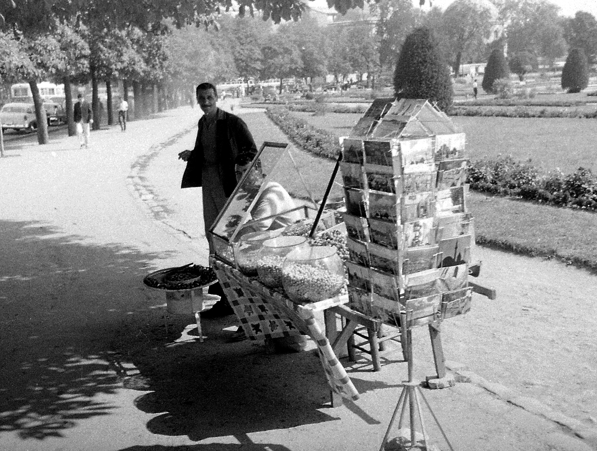
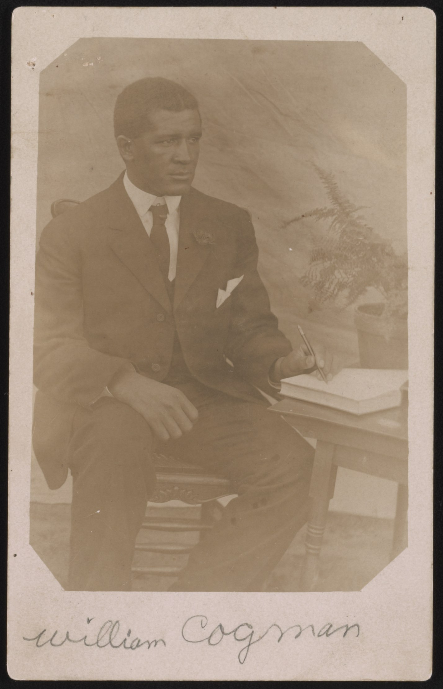

A Wall of Postcards
2026-05-14
It began with one card, the way most good habits do — by accident. A friend was traveling, and instead of a text with a photo attached, an actual postcard turned up in my mailbox: stamp, postmark, four cramped lines squeezed onto the back. Rather than tossing it in a drawer, I taped it above my desk. A few weeks later another card arrived, from somebody else entirely, and it went up beside the first. Then a third. Somewhere along the way the cards crossed an invisible line between decoration and collection, and now there is a whole wall of them — and it is, without question, my favorite thing in the room.

Photo: Wikimedia Commons
Nobody curates a postcard wall
A gallery gets planned. A postcard wall just happens, one small kindness at a time. Nobody sat down and designed the arrangement; the cards simply go up in the order they arrive, which means the wall is really a timeline wearing a disguise. That one came during a road trip last spring. That one arrived the week of the big storm. The faded card in the corner has been up so long its tape has gone yellow, and it is not coming down for anything.
The mix is the whole charm. Some of the cards are genuinely beautiful — mountains at dawn, a harbor at dusk, the kind of scene that makes you understand why anyone bothered inventing postcards in the first place. Others are gloriously, unapologetically tacky: oversized letters spelling out a town name, a cartoon animal in sunglasses, a sunset so orange it cannot possibly have happened. On a wall, they hold equal rank. A postcard does not have to be tasteful. It just has to have been sent.
There is a quiet pleasure in reading the backs, too. You can spend an evening browsing old postcards people have scanned and shared, and it is remarkable how little the messages have changed in a hundred years. Having a wonderful time. The food is better than expected. Wish you were here. We are still writing the same four sentences our great-grandparents wrote — and honestly, they are the right four sentences.
My favorite card on the wall is not the prettiest one. It is a plain card, picture side nothing special, that a young cousin sent one summer with every available line filled — margin to margin, around the stamp, with a postscript running sideways up the edge because the news simply would not fit. There is a hand-drawn map of a campsite. There is a review of a gas-station hot dog, rendered in detail no food critic has ever matched. That card has been up for years now, and it still makes me laugh in the doorway, which is more than most art manages.
Four lines is exactly enough
At some point it felt rude to only receive, so I started sending cards back, and that is when I learned that writing a postcard is its own small discipline. A letter gives you room to ramble. A postcard gives you four lines, maybe six if your handwriting shrinks, and no envelope to hide in. Everything you write travels in the open, which keeps you honest and brief. You cannot say everything, so you say the truest things: where you are, what you ate, what the sky was doing, that you miss the person.

Photo: Wikimedia Commons
There is also the matter of the delay, which I have come to think is a feature rather than a flaw. A text arrives the second it is sent and is forgotten by lunch. A postcard shows up a week later, after the trip is over and the sender is home doing laundry — a message from the recent past, from someone who was thinking of you in a specific place at a specific hour. By the time it lands, it is not news anymore. It is evidence.
To make sending easy, I keep a small stockpile: a shoebox of blank cards picked up in bookshops and museum stores and one memorable gas station, plus a book of stamps that never expires. No ceremony, no special trip to the post office — just a card, a pen, and a mailbox passed on some ordinary walk. Half the pleasure is in the choosing, holding up two cards and deciding which friend gets the lighthouse and which one gets the bear.
The wall keeps its own calendar
The wall has started keeping track of things I never asked it to. Anniversaries of trips. The friend who moved away and sends a card every few months like a heartbeat. Even institutions have caught on to the value of these little rectangles — you can spend a happy half hour wandering a postcard collection at the Metropolitan Museum of Art without leaving your chair, looking at cards people mailed a century ago for reasons exactly like mine.
So here is my small suggestion, offered freely: if you have a blank stretch of wall and a friend going anywhere at all, ask for a card. Ask shamelessly. Offer to send one back. It costs almost nothing, takes five minutes, and shows up like a tiny paper celebration in the middle of an ordinary week. And if the wall fills up — well. That is not a problem. That is the point.